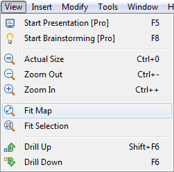

Fit Map and Fit Selection
These two options are very useful during map navigation.

If choosing Fit Map, XMind will zoom the map to fit the full map editor area. Esp. when the map is big, this option will show the entire map one time.
And the Fit Selection will zoom in/out the selected one or more topics and show them only in the map editor area. People may like this option while needing to focus on a topic during a meeting.
You may also be interested in...